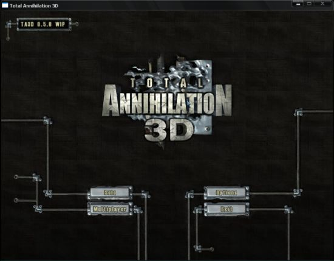
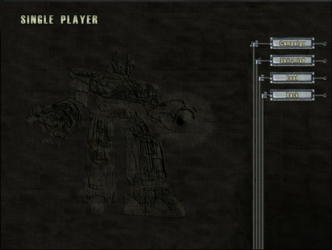
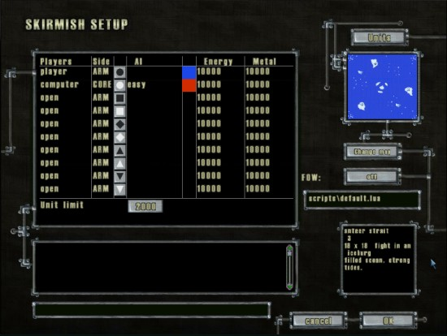
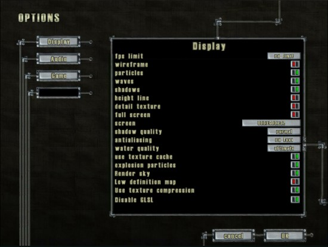
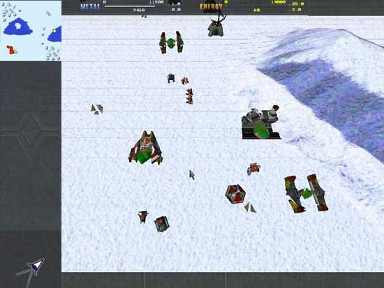

Game Guide
After launching the game you`ll get in to the Main menu screen. Here are you can choose one of four buttons:
Solo - start a campaign/scirmish battle
Options - configure TA3D options
Multiplayer - start/join multiplayer game
Quit - quit TA3D

Solo
You see a game selection menu.
Campaign - Play TA campaign.
Scirmish - Play a scirmish battle.
Load - Load a previosly saved game.

Campaign
Here you can chose side and mission to play
Also you can adjust difficulty level.


Scirmish
If you chose scirmish - you`ll see a game setup screen. Here you can specify your race (ARM/CORE by default), Add enemy AI players, change players color, teams and start resources.
Also you can chose a different AI script to play TA3D with different rules. See more about scripts below.
You can also adjust Fog_of_War type.
off - Fog_of_War is off, all map and units visible.
grey - Fog_of_War is on, all map visible, enemy units - no.
black - Fog_of_War is on, all map and enemy units not visible.
on - Fog_of_War is on, all map and enemy units not visible, FOW removing permanently.

On the right side of the screen you can change a map (click on the minimap picture).
Chosing map
You see all maps found in TA3D dir. Clicking a map shows it's minimap on the right side of the screen. Click "OK" to select the map and "Cancel" to go back to the game setup screen with default one. "Enter" and "Esc" do the same as "OK" and "Cancel"

Chosing AI scripts
Selecting different scripts allows to change AI behavior and game rules. For example, chosing defence.lua script allows you to play against periodically spawned enemy forces. Every several minutes a wave of enemy units will spawn and attack you. If player survive several attack waves - he`ll win the game.
Scripts can be modified in ta3d/scripts/ folder. Feel free to experiment!

Options



fps_limit - sets max fps
wireframe - on/off wireframe models
particle - on/off particles
waves - on/off waves
shadows - on/off shadows
height line - on/off planes altitude
detail texture - on/off detail textures
draw console while loading - on/off console while loading
fullscreen - on/off fullscreen for TA3D
language - sets language package (english, french, ...)
screen -sets resolution of TA3D (640x480, 800x600 etc.)
shadow quality - sets shadow quality
water quality - sets quality of water drawning
Current mod - select active mod
Player name - player name
game speed - sets game speed
antialiasing - sets full screen anti-aliasing
In the Audio setup part of menu you can arrange audio files, which will be playing during the game. To add new audio simply copy your mp3 (ogg, wma) music in ta3d/music/ folder.
Also you`ll find other settings conserning camera preferences and some others.
Getting started...
1. There are two types of resources, like in Total Annihilation - Metal and Energy.
Metal can be mined basically from metal deposits and Energy - generated by solar panels, geothermal powerplants and nuclear powerplants, ...
Game starts with only unit - Commander.

2.Unit selection - with left click (shift to add it to current selection) or drag the box around several units so select them all.
To order a unit to move, select it and click where you want it to go, right click to deselect.

3. To order a unit to make a building, select the unit, click the building you want to make in the left menu, then on the map where you want your unit to build it.
4. Building can not be build everywhere. Structures can be built on the flat surfaces.

5. In order to build a unit - build neccesary structure (k-bot lab, airport, vehicle plant and so on...) and left click on unit icon on the left side of the screen.

Game ends
After the game is finished you`ll see a result screen, where major scores are shown.
Camera control
Camera shows a view similar to Total Annihilation's one, with ability of viewing angle change.
It ranges from 45 to 90 degrees (Total Annihilation camera angle 63.44 deg.) and can be modified with your mouse wheel (also activates Mega Zoom feature like in Supreme Commander).
You can move the camera using the minimap or with your mouse holding down your middle button.
At the left bottom of the screen an icon allow you to (de)activate the free camera mode. In free camera mode use arrows to move, with your mouse wheel you can go forward/backward and if you hold down the middle button you can look around.
In-game interface
Here are the commands available:
CTRL+0..9 to save unit selection
ALT+0..9 to restore a saved selection
CTRL+C select the commander
CTRL+Z select units of the type of already selected units
CTRL+D Toggles selfdestruct of selected unit
")" ("`" or "²" under windows) show/hide the console
F1 shows info screen about selected unit
F12 take a screen shot
Shortcuts:
"A" - attack
"R" - repair
"M" - move
"L" - load a unit (transporters only)
"U" - unload
"P" - patrol
"E" - reclaim
"T" - toggle camera's tracking mode